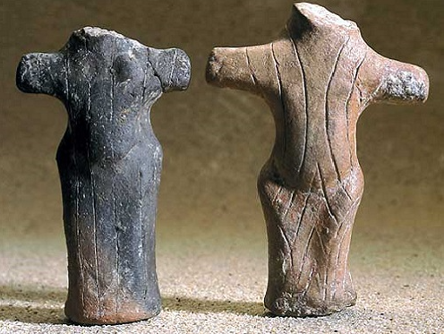

After exploring the world's famous sites, Stoner D2 arrives in
Serbia and discovers significant artifacts that shed new light on
the history of the region. Through cooperation with local
archaeologists, the robot will reveal fascinating stories about
Serbia's past. His story begins at the archaeological site of Vinča
and Starčevo, one of the most important Neolithic sites in Europe.
The robot had the opportunity to explore this ancient city,
discovering artifacts dating from the 6th to the 5th millennium BC.

During its excavations, the robot found a special artifact - a clay
figurine representing a female figure with prominent attributes of
fertility. This discovery sheds new light on the religious and
cultural practices of the Neolithic community of Vinča, revealing
more about their beliefs and lifestyle. Cooperation with local
archaeologists enabled a detailed study of this figurine, which
resulted in new knowledge about Serbia's ancient past and its place
in the context of European prehistory.
Stoner D2 also during his visit learned a lot of facts about
Starčevo and their culture.Did you know that The Starčevo culture
flourished roughly between 6200 and 5200 BCE, making it one of the
earliest Neolithic cultures in the region.Starčevo settlements were
typically located near rivers, lakes, or fertile plains, indicating
an agricultural lifestyle. These settlements ranged from small
villages to larger, more complex communities.The people of the
Starčevo culture practiced a mixed economy, combining agriculture
with hunting, fishing, and gathering. They cultivated crops such as
wheat, barley, and pulses, and domesticated animals like cattle,
sheep, goats, and pigs.And thats just some interesting facts, He
learned so much more!